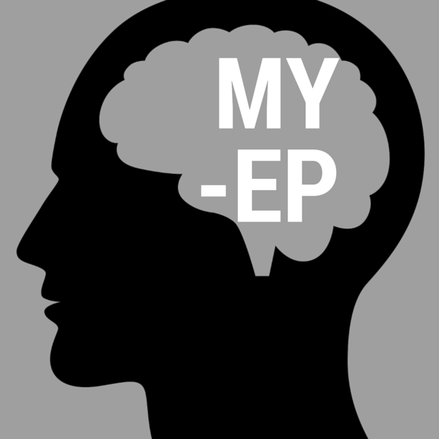

Home
Your Team
The IEP Meeting

Contact Us
Accessibility
Home
Your Team
The IEP Meeting
Contact Us
Accessibility
Welcome to My EP, where you start taking charge of your education. My EP empowers students with learning disabilities to take charge of their Individual Education Programs (IEPs). No matter how you learn, you have the right to know and participate in your specialized education program. My EP shows you the basics of what an IEP is, who is involved, and how you can advocate for yourself. Check out the accessibility guide to see how best to utilize My Ep for you.
This meeting is about you and your needs, and in the end, you know you better than anyone else. For more about being your own advocate see this article (http://fvkasa.org/resources/files/ed-advocating-hsms.php).
The school must invite your parents to the meeting early enough that at least one can attend and participate.
At least one of your special education teachers and one of your regular education teachers must be present. These teachers will be able to talk about how they can adapt instruction to meet your needs.
This will be someone who knows the school or school district and can commit the resources needed to make sure your plan is followed.
Someone on the team must be able to talk about what your previous evaluation results mean for designing your instruction. This could be the special education teacher or the district representative, or it could be another person entirely, like a school psychologist.
Either your parents or the school may invite other people who have special knowledge of your condition to participate in the meeting.
At an IEP meeting, the IEP team will discuss your strengths and needs to come up with a plan for your education for the coming year. The team must agree on several statements that will make up your IEP. These include:
In addition to making up the contents of your IEP, these discussions will also influence the decision on your placement the year. The law requires that you be placed in the “Least Restrictive Environment” possible given your unique needs. In general, this means that you should be placed in the same school you would attend if you had no disability unless your needs specifically require an alternative placement.